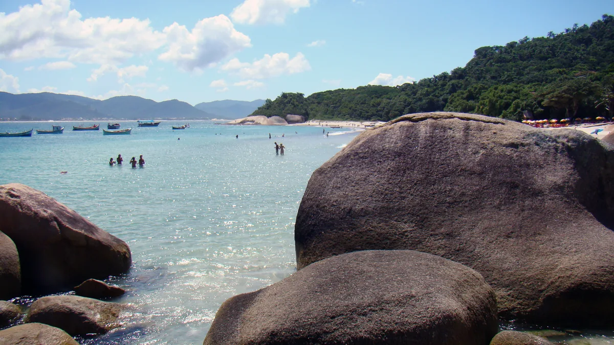

01
Ilha do Campeche
IlhaR$ 15
taxa municipal; o barco é à parte e não devolve

Rodrigo Soldon · CC BY 2.0 · via Wikimedia Commons · recortada
A regra que faz perder o dinheiro
Fonte: site oficial da Prefeitura de Florianópolis (ilhadocampeche.pmf.sc.gov.br), consultado em 7/nov/2026.
“Não é possível reagendamento ou restituição do valor pago.”
“A prefeitura não se responsabiliza por impossibilidade de visitação devido às condições meteorológicas ou de navegação.” E o próprio site pede: “Verifique a previsão do tempo antes de fazer a sua reserva!”
O voucher só é liberado 24 horas depois de o pagamento compensar. Quem descobre o Campeche no dia não entra no dia.
“Não é possível reagendamento ou restituição do valor pago.”
“A prefeitura não se responsabiliza por impossibilidade de visitação devido às condições meteorológicas ou de navegação.” E o próprio site pede: “Verifique a previsão do tempo antes de fazer a sua reserva!”
O voucher só é liberado 24 horas depois de o pagamento compensar. Quem descobre o Campeche no dia não entra no dia.
Quanto custa, e o limite
Tarifa oficial noticiada pela imprensa a reportagem do ND Mais de 18/01/2026 dá R$ 15 por pessoa de taxa municipal, emitida no site — o valor só aparece no site oficial depois do login. O barco é à parte, de uma das associações credenciadas que o site lista, e a mesma reportagem fala em R$ 185 a R$ 250 por pessoa. Não há tabela oficial do barco.
Limite de 800 visitantes por dia, com acesso das 9h às 17h, na mesma reportagem.
A ilha é tombada pelo IPHAN desde 2000 e virou Monumento Natural Municipal em 2025 — “a maior concentração de oficinas líticas e inscrições rupestres do litoral brasileiro”, diz o site.
Limite de 800 visitantes por dia, com acesso das 9h às 17h, na mesma reportagem.
A ilha é tombada pelo IPHAN desde 2000 e virou Monumento Natural Municipal em 2025 — “a maior concentração de oficinas líticas e inscrições rupestres do litoral brasileiro”, diz o site.
Onde fica